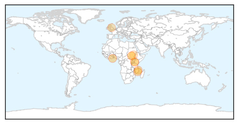
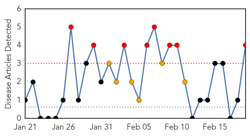
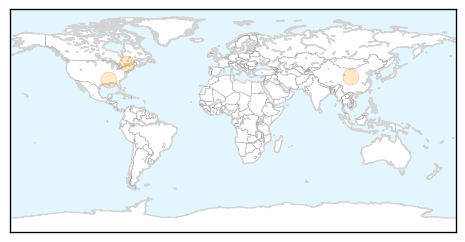

Cholera
30-Day Web Trend
0 alerts, 0 warnings

30-Day Twitter Trend
1 alerts, 0 warnings

Article Locations
Article Confidences

Top Articles:
- 0.967
- Malawi: Southern Africa Weekly Report Map, 10 - 16 February 2015
- 0.948
- Southern Africa Weekly Report Map, 10 - 16 February 2015 - Malawi
- 0.912
- Cholera claims four more as toll goes up - Kenya
- 0.885
- Cholera Outbreak: Six dead, eight hospitalized In Ebonyi
- 0.814
- GHS alerts possible cholera outbreak in Brong-Ahafo
- 0.775
- South Sudan Has a Choice... Between Horror and Misery
- 0.760
- In Malakal, South Sudan's Abysmal Tragedy Cannot Be Ignored
- 0.605
- Kenya: Cholera claims four more as toll goes up
- 0.570
- NGO calls on the Methodist church to help champion cholera and Ebola campaign
- 0.558
- Wise Water Foundation calls on Methodist Presiding Bishop
- 0.524
- South Sudan: Update on PAH's activities in South Sudan
Top Tweets:
- 0.951
- Vaccine? RT: "We're on maximum alert the& situation is very complex" Mozambique's DD public health & fears cholera outbreak spread
Pertussis
30-Day Web Trend
8 alerts, 6 warnings

30-Day Twitter Trend
0 alerts, 0 warnings

Article Locations
Article Confidences

Top Articles:
Top Tweets:
-
No tweets found for Feb 19, 2015